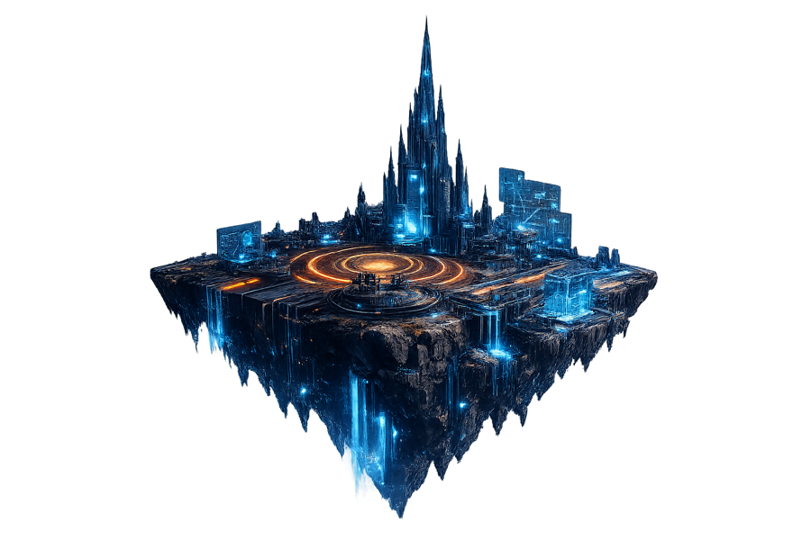
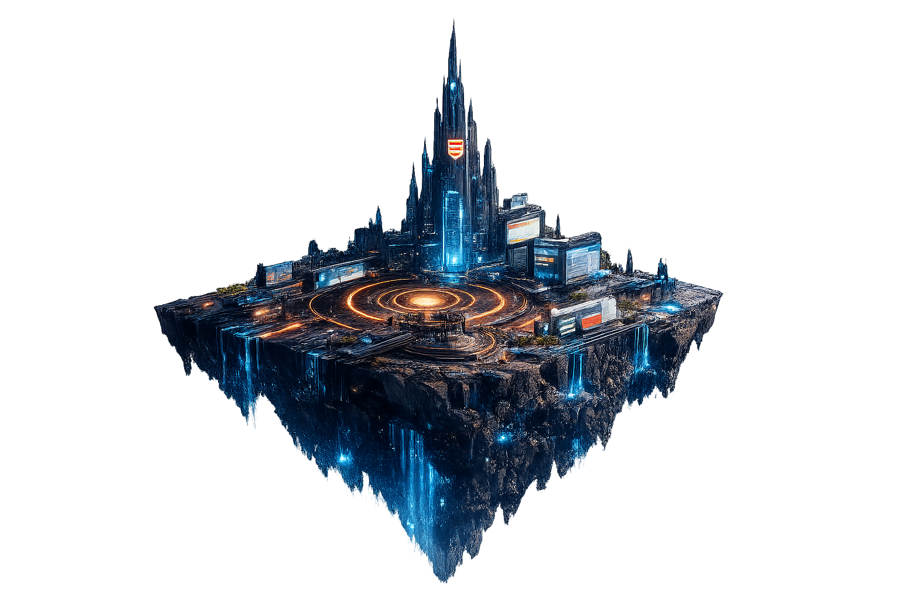
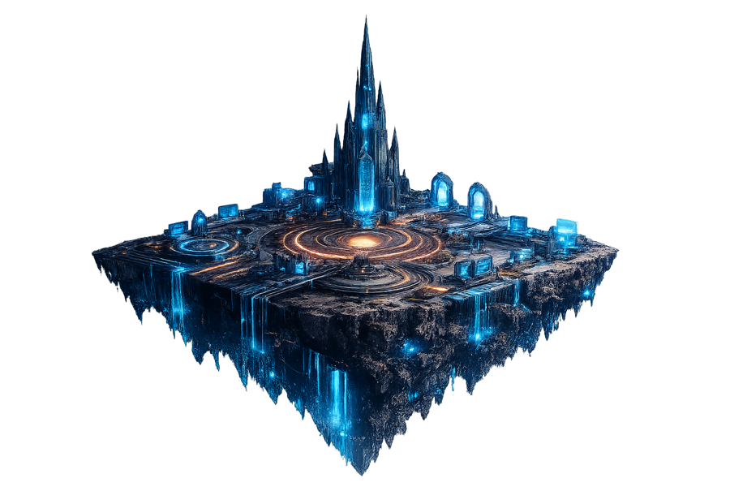
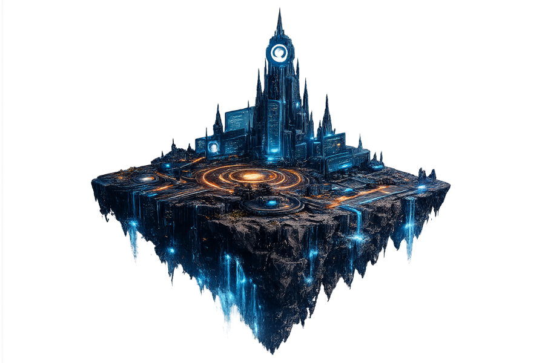

TutorialsSubstack + Epic

Tutorials

SUBSCRIBE ON SUBSTACKPractical systems for the next generation of interactive worlds. UnrealOps connects real-time 3D with modern infrastructure, AI-native workflows, and open-source tools.
The future of Unreal Engine development reaches far beyond rendering. It lives where artists, engineers, agents, distributed systems, and massive datasets meet. UnrealOps turns that frontier into practical guidance through field-tested tutorials, open-source infrastructure, and production-ready workflows.
Content
Tutorials, open-source projects, tools, and videos in one place.

Tutorials

GitHub projects

Fab marketplace

YouTube channel
Playable prototype
Try the first UnrealOps game prototype: move through a procedural isometric arena, aim with the mouse, and survive ranged attacks from spectral enemies.
Playable encounter
Move. Aim. Survive. Ghosts will hunt you and cast energy projectiles. Use WASD, your mouse, and left click.Latest tutorials
A foundational, production-minded infrastructure layer built with Terraform or OpenTofu.
Connect open-source AI coding agents directly to Unreal Engine 5.8 editor context.
Bridge Unreal editor context and a new generation of AI-native development tools.
A repeatable source-build workflow for modern Windows-based Unreal development.
Build, inspect, and launch UE5 from source with an AI-native macOS toolchain.
Featured open-source project
Infrastructure designed for game studios, shared in the open.
Public repository
A reusable AWS foundation for Unreal Engine development: private EKS, elastic Karpenter capacity, secure remote access, and an opt-in Lore binary-asset service.
Explore the repositoryNewsletter
Subscribe for new tutorials, open-source releases, and project updates.